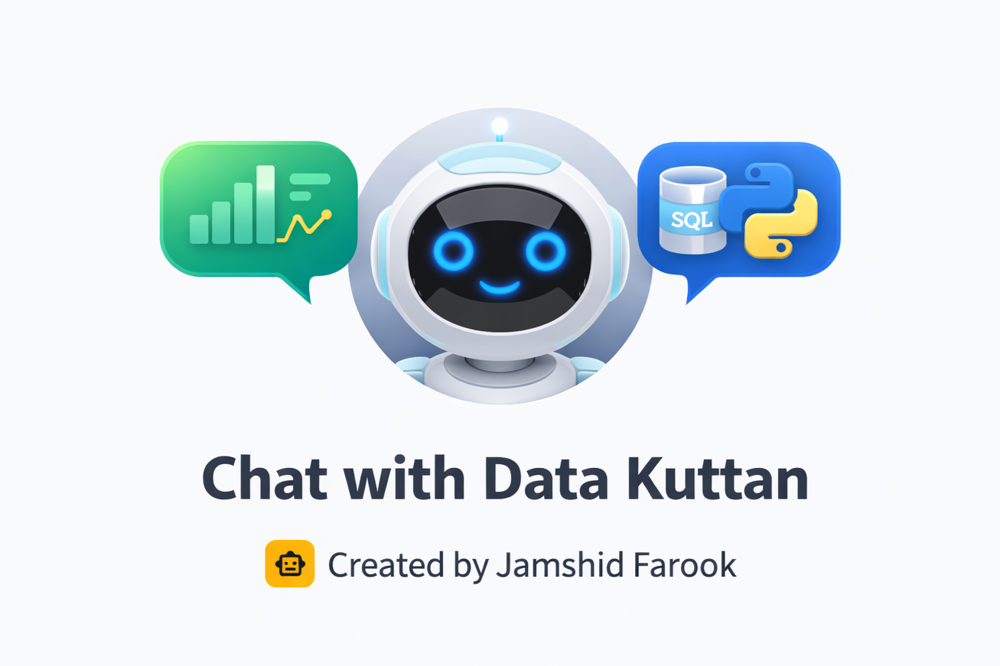

Excel | SQL | Python | Power BI | Tableau
I am a passionate Data Analyst with experience in transforming raw datasets into actionable insights. I specialize in Excel, SQL, Python, Power BI, and Tableau to analyze, visualize, and present data for informed decision-making. My work includes designing dashboards, performing exploratory data analysis, creating predictive models, and automating data workflows to optimize business processes.
I hold professional certifications from Google and IBM, demonstrating my commitment to continuous learning and excellence in analytics. My goal is to help organizations leverage data effectively, uncover trends, and make data-driven decisions with confidence.
Beyond technical skills, I enjoy solving complex problems, exploring new analytics tools, and applying data science to real-world business challenges. Whether it's cleaning messy datasets, building automated reporting pipelines, or creating compelling visual stories with data, I thrive on turning numbers into insights.
Check out my LinkedIn to know more about my education.

Data Kuttan is a chatbot designed for data analysts. It answers questions related to SQL, Python, Power BI, data visualization, and general analytics problems. Built with Python, Groq console API, and live using Streamlit.
Chat with Data Kuttan